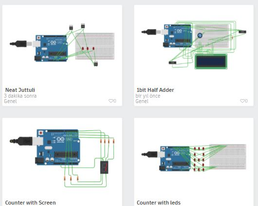

Back to Portfolio
Project
GitHub
Aurdino Circuts
(C++)
My aurdino projects with C++ on Tinkercad

Click the project names to see more about projects
1 Bit Full Adder
Counter with LED
Counter with screen